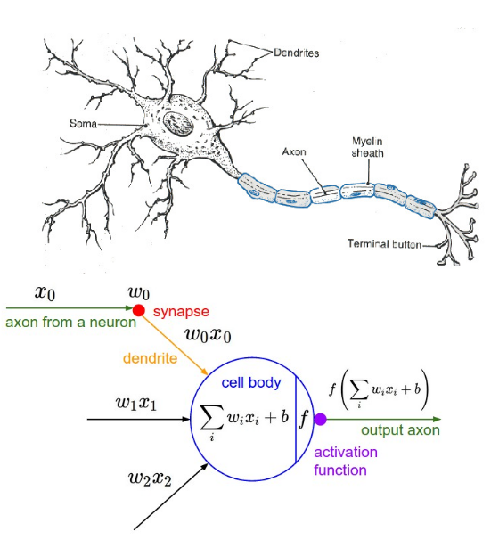

<?xml version = "1.0" encoding = "UTF-8"?>
<xsl:stylesheet version = "1.0" xmlns:xsl = "http://www.w3.org/1999/XSL/Transform">
<xsl:template match = "/"> 
<!doctype html>
<html lang="en">

	<head>
		<meta charset="utf-8">
    
		<title>Memristec Hands-On Tutorial</title>
		<meta name="description" content="NNML">
		<meta name="author" content="Emre Neftci">

		<meta name="apple-mobile-web-app-capable" content="yes">
		<meta name="apple-mobile-web-app-status-bar-style" content="black-translucent">

		<link rel="stylesheet" href="dist/reset.css">
		<link rel="stylesheet" href="dist/reveal.css">
		<link rel="stylesheet" href="nmilab.css">

		<!-- Theme used for syntax highlighted code -->
		<link rel="stylesheet" href="plugin/highlight/monokai.css">

    <script src="jquery.js"></script> 
    <script> 
    $(function(){
      $("#sdlides").load("slides_1_inner.html"); 
    });
    </script> 

  </head>    

	<body>
		<div class="reveal">
			<div class="slides">
<script>
  //function for evaluation
  function solve()
  {
          let w0 = parseFloat(document.getElementById("w0").value)-50
          let w1 = parseFloat(document.getElementById("w1").value)-50
          let b =  parseFloat(document.getElementById("b").value) -50
          document.getElementById("a11").innerHTML = (eval(w0)*1+eval(w1)*1+eval(b)).toFixed(2)
          document.getElementById("a10").innerHTML = (eval(w0)*1+eval(w1)*0+eval(b)).toFixed(2)
          document.getElementById("a01").innerHTML = (eval(w0)*0+eval(w1)*1+eval(b)).toFixed(2)
          document.getElementById("a00").innerHTML = (eval(w0)*0+eval(w1)*0+eval(b)).toFixed(2)
          document.getElementById("y11").innerHTML = (((eval(w0)*1+eval(w1)*1+eval(b))>0)*1)
          document.getElementById("y10").innerHTML = (((eval(w0)*1+eval(w1)*0+eval(b))>0)*1)
          document.getElementById("y01").innerHTML = (((eval(w0)*0+eval(w1)*1+eval(b))>0)*1)
          document.getElementById("y00").innerHTML = (((eval(w0)*0+eval(w1)*0+eval(b))>0)*1)
          document.getElementById('w0val').innerHTML=eval(w0).toFixed(2); 
          document.getElementById('w1val').innerHTML=eval(w1).toFixed(2); 
          document.getElementById('bval').innerHTML =eval(b).toFixed(2); 
        }

</script>


        <section data-markdown data-vertical-align-top data-background-color=#B2BA67><textarea data-template>
            <h1> Neural Network Basics: The Perceptron<br/> </h1>
        </textarea></section>

        <section>
        <h2>The First Artificial Neuron</h2><ul>
        <li><p>In 1943, McCulloch and Walter Pitts propose the first artificial neuron, the Linear Threshold Unit. </p>
        
        </li>
        <li>In the Linear Threshold Unit, $f$ is a step function: $f(x) = 1$ if $x&gt;0$
        </li>
        <li>"Modern" artificial neurons are similar, but $f$ is typically a sigmoid or rectified linear function</li>
        </ul>
        </section>

        <section>
        <h2>Basic Mathematical Model of the Artificial Neuron</h2>
        <div class=row>
        <div class=column>
        
        </div>
        <div class=column>
        <ul>
        <li>$x_i$  is the state of the input neurons</li>
        <li>$w_i$ is the weight of the connection</li>
        <li>$b$ is a bias</li>
        <li>The total input to the neuron is: $ a = \sum_i w_i x_i +b $</li>
        <li>The output of the neuron is: $ y = f(a) $</li>
        <li>where $f$ is the activation function</li>
        </ul>
        </div>
        </div>
        </section>

        <section data-markdown><textarea data-template>
        <h2>The Perceptron</h2>
        
        <blockquote>
        
        </blockquote>
        <ul>
          <li/> Further reading: <a href="https://news.cornell.edu/stories/2019/09/professors-perceptron-paved-way-ai-60-years-too-soon">Professor’s perceptron paved the way for AI – 60 years too soon </a>
        </ul>
        </textarea></section>


        <section>
        <h2>The Perceptron</h2>
        <ul>
          <li> The Perceptron is a special case of the artificial neuron where:
        $$
        \begin{eqnarray}
        \mbox{y} & = & \begin{cases}
              -1 & \mbox{if } a = \sum_j w_j x_j + b \leq 0  \\\\
              1 & \mbox{if } a = \sum_j w_j x_j + b > 0
              \end{cases}
        \end{eqnarray}
        $$</li>
        
        <li> Three inputs $x_1$, $x_2$, $x_3$ with weights $w_1$, $w_2$, $w_3$, and bias $b$</li>
        </ul>
        </section>

        <section>
          <h2> Perceptron Example</h2>
          <ul>
            <li/> Like McCulloch and Pitts neurons, Perceptrons can be hand-constructed to solve simple logical tasks
            <li/> Let's build a "sprinkler" that activates only if it is dry and sunny.
            <li/> Let's assume we have a dryness detector $x_0$ and a light detector $x_1$ (two inputs)
            <li/> Find $w_0$, $w_1$ and $b$ such that output $y$ matches target $t$
          </ul>


        

        
        <div class=row>
        <div class=column>
        
        </div>
        <div class=column>
          <table>
          <thead>
          <tr>
          <th>Sunny</th>
          <th>Dry</th>
          <th>$a$</th>
          <th>$y$</th>
          <th>$t$</th>
          </tr>
          </thead>
          <tbody>
          <tr>
          <td>1 (yes)</td>
          <td>1 (yes)</td>
          <td> <div id="a11"></div></td>
          <td> <div id="y11"></div></td>

          <td>1</td>
          </tr>
          <tr>
          <td>1 (yes)</td>
          <td>0 (no)</td>
          <td> <div id="a10"></div></td>
          <td> <div id="y10"></div></td>

          <td>0</td>
          </tr>
          <tr>
          <td>0 (no)</td>
          <td>1 (yes)</td>
          <td> <div id="a01"></div></td>
          <td> <div id="y01"></div></td>
          <td>0</td>
          </tr>
          <tr>
          <td>0 (no)</td>
          <td>0 (no)</td>
          <td> <div id="a00"/></div></td>
          <td> <div id="y00"/></div></td>
          <td>0</td>
          </tr>
          </tbody>
          </table>
        </div>
        </div>

            <table border="1">
              <tr>
                <td>$w_0 =$ <span id=w0val>0</span></td>
                <td>$w_1 =$ <span id=w1val>0</span></td>
                <td>$b =$   <span id=bval>0</span></td>
              </tr>
              <tr>
                <td colspan="1"><input type="range" min="-50." max="100." step=0.01  onchange="solve();" id="w0"  /></td>
                <td colspan="1"><input type="range" min="-50." max="100." step=0.01  onchange="solve();" id="w1"  /></td>
                <td colspan="1"><input type="range" min="-50." max="100." step=0.01  onchange="solve();" id="b"  /></td>
              </tr>
            </table>


        </section>


        <section data-markdown><textarea data-template>
        ## The Perceptron Learning Rule
        
        <p class=ref>(Bishop, 2006 Pattern Recognition and Machine Learning)</p>

        - Perceptron convergence theorem: if the training dataset is linearly separable, then the perceptron learning rule is guaranteed to find an exact solution
        <p class=ref>(Rosenblatt, 1962, Principles of Neurodynamics: Perceptrons and the Theory of Brain Mechanisms)</p>
        </textarea></section>

        <section data-markdown><textarea data-template>
        ## Cost Functions

        <ul>
        <li/> The Cost (Error) function returns a number representing how well a model performed. 
        <li/> Perceptrons: Cost function = Number of Misclassified Samples
        <li/> Other common cost functions are 
          <ul>
          <li/> Mean Squared Error: $  C_\text{MSE}  = \frac{1}{2N} \sum_{n \in \text{train}} (\mathbf{y}^n - \mathbf{t}^n) ^2 $ 
          <li/> Cross-Entropy: $  C_{XENT} = - \frac1N \sum_{n \in \text{train}} \sum_k y_{k}^n  \log t_{k}^n $
          </ul>
        <li /> The objective is to minimize the cost function. 
        <li /> Cost functions can be minimized using an optimization algorithm
        </ul>
        </textarea></section>


        <section data-markdown><textarea data-template>
        ## Optimization Algorithm Gradient Descent
          
          Example: Find $x$ that minimizes $C(x) = x^2$

          

          - Incremental change in $\Delta x$:
          $$
          \begin{eqnarray} 
            \Delta C \approx \underbrace{\frac{\partial C}{\partial x}}_{\text{=Slope of }C(x)} \Delta x 
          \end{eqnarray}
          $$
          With $\Delta x = - \eta \frac{\partial C}{\partial x}$, $\Delta C \approx - \eta \left( \frac{\partial C}{\partial x} \right)^2$

          - Gradient Descent for finding the optimal $x$: 
          $
          \begin{eqnarray} 
            x \leftarrow x - \eta \frac{\partial C}{\partial x}
          \end{eqnarray} 
          $
        </textarea></section>


      </div></div>

		<script src="dist/reveal.js"></script>
		<script src="plugin/zoom/zoom.js"></script>
		<script src="plugin/notes/notes.js"></script>
		<script src="plugin/math/math.js"></script>
		<script src="plugin/search/search.js"></script>
		<script src="plugin/markdown/markdown.js"></script>
		<script src="plugin/highlight/highlight.js"></script>
		<script>
			// More info about initialization & config:
			// - https://revealjs.com/initialization/
			// - https://revealjs.com/config/
			Reveal.initialize({
				hash: true,
        width: 1280,
        height: 720,
        margin: 0.0,
        navigationMode: 'grid',
        transition: 'fade',
				controls: true,
				progress: true,
				center: true,
				hash: true,
				plugins: [RevealMarkdown, RevealHighlight, RevealNotes, RevealMath.MathJax2],
        math: {
              mathjax: 'https://cdnjs.cloudflare.com/ajax/libs/mathjax/2.7.0/MathJax.js',
              config: 'TeX-AMS_HTML-full', 
              TeX: { Macros: { Dp: ["\\frac{\\partial #1}{\\partial #2}",2] }}
            },
			});
		</script>
	</body>
</html>
